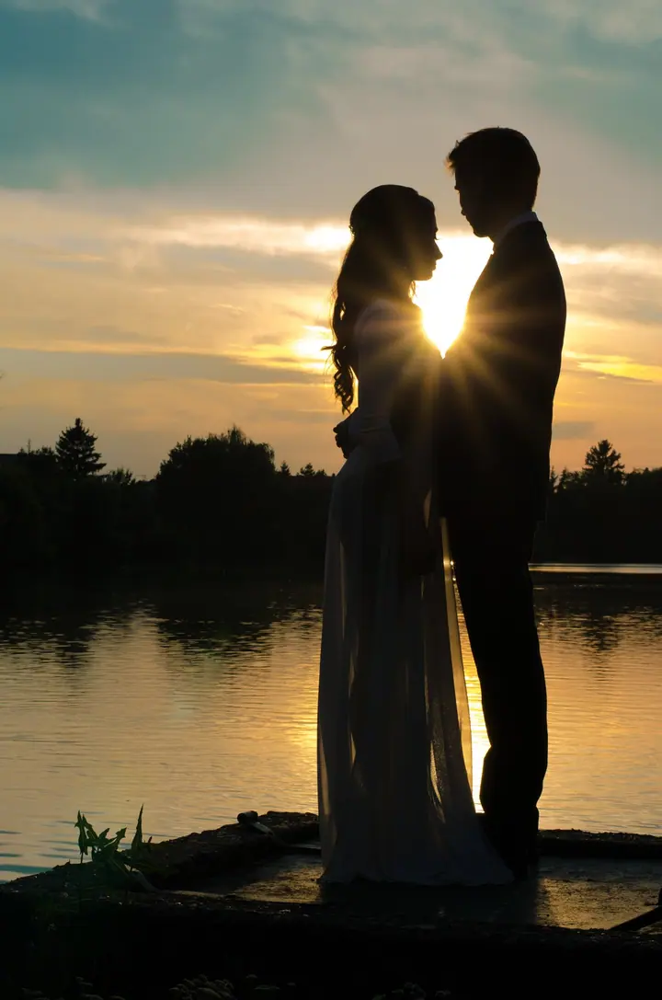
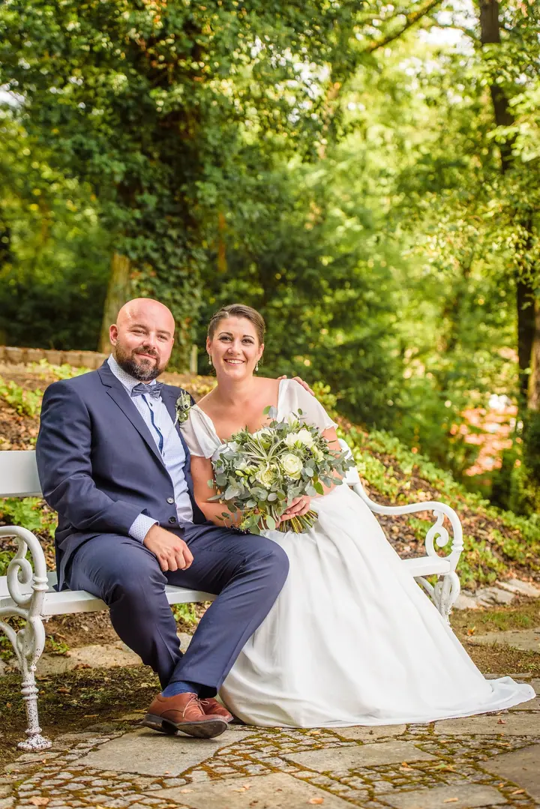
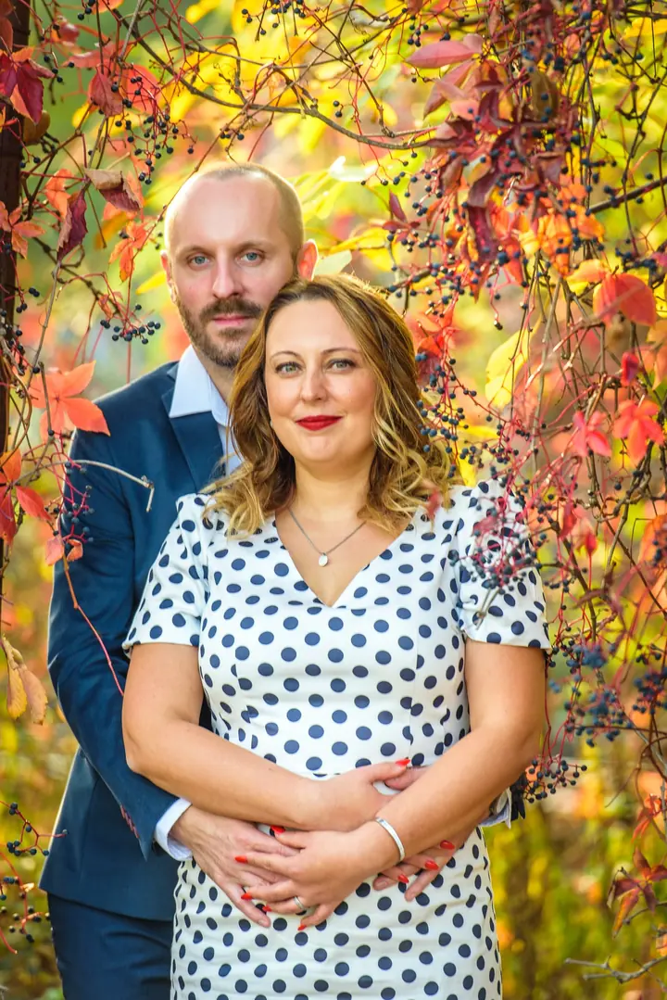
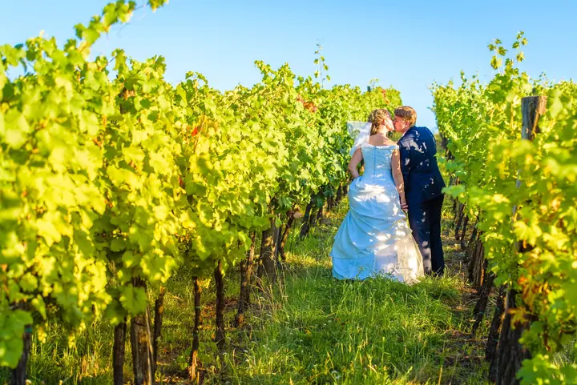

jedna
Svatební focení
Váš svatební příběh vtisknu do fotografií plných emocí, krásy a radosti. S láskou ke každému detailu, ať už se berete v Česku, nebo v zahraničí.

Svatební, rodinný a firemní fotograf · Brno, jižní Morava, Česko i zahraničí

Jmenuji se David Sís a jsem svatební, firemní a rodinný fotograf z Brna. Fotografuji srdcem, miluji jas a barvy a soustředím se na zachycení okamžiku a detailu. Vytvářím fotografický příběh podle vašich přání.
Více o mně
Co fotím
jedna
Váš svatební příběh vtisknu do fotografií plných emocí, krásy a radosti. S láskou ke každému detailu, ať už se berete v Česku, nebo v zahraničí.
Rodinné focení venku: na vaší zahradě, na rozkvetlé louce, v poli nebo v lese. Klidně i s domácími mazlíčky.
Portréty v ateliéru i venku. Mini focení trvá zhruba 30 minut a dostanete z něj pět pečlivě upravených fotografií na web, do životopisu nebo na sociální sítě.
Portréty zaměstnanců, eventy, produkty i reportáže. S mobilním fotoateliérem přijedu k vám do firmy s kompletní výbavou.
Miluji jas a barvy.

Za objektivem
S focením jsem začal přes kurzy ateliérové fotografie, kompozice a práce se světlem. V roce 2012 jsem si pořídil zrcadlovku. Nejdřív jsem fotil rodinu, známé a kamarády, pak jsem se přesunul do pronajatých ateliérů a sbíral zkušenosti.
Postupně jsem se vyprofiloval na svatebního, portrétního a firemního fotografa. Od roku 2015 jsem členem MyWed, komunity profesionálních svatebních fotografů z celého světa. Ve stejném roce jsem vstoupil do fotografického spolku Člověk a Víra, se kterým jsem několikrát vystavoval na Pražském hradě.
Záleží mi na detailech, miluji barvy a emoce. Na svatbě hledám nečekané, opravdové chvíle a nové úhly pohledu. Pro firmy a portréty mám od roku 2022 mobilní fotoateliér, takže za vámi přijedu s kompletní výbavou.
David
Zavolejte mi nebo napište. Pošlu vám podrobnosti a ceník a společně vybereme, co vám bude nejvíc vyhovovat.
Probereme, jak si focení představujete. Fotografický příběh tvořím podle vašich přání.
Snažím se, aby byla při focení dobrá atmosféra a vy jste se cítili přirozeně. Hlídám světlo, kompozici i drobné detaily.
Pečlivě vyberu a upravím nejhezčí momenty. U rodinného focení vám nabídnu 40–60 fotek a z nich si vyberete podle balíčku.
Portfolio
Otázky
Balíček s 20 fotografiemi stojí 3 800 Kč, s 30 fotografiemi 4 200 Kč a se 40–60 fotografiemi 4 800 Kč. Každá fotka navíc je za 200 Kč, focení ve fotoateliéru stojí 700 Kč navíc.
Ceny a balíčky svatebního focení vám rád pošlu. Stačí mi napsat nebo zavolat, a dostanete podrobný ceník se vším, co k výběru potřebujete.
Focení venku trvá zhruba 30 minut a dostanete pět pečlivě upravených a jemně retušovaných fotografií, třeba do životopisu nebo na sociální sítě. Nabízím ho jen jednotlivcům, stojí 1 900 Kč.
Ano. Svatby fotím v Česku i v zahraničí a k firmám přijedu s mobilním fotoateliérem. Cenu firemního focení připravím na míru podle počtu lidí a typu focení.
Napište pár vět o tom, co si představujete. · +420 608 879 067